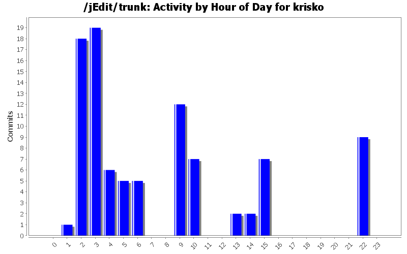
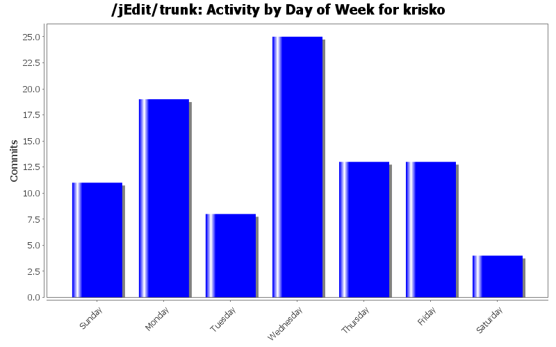
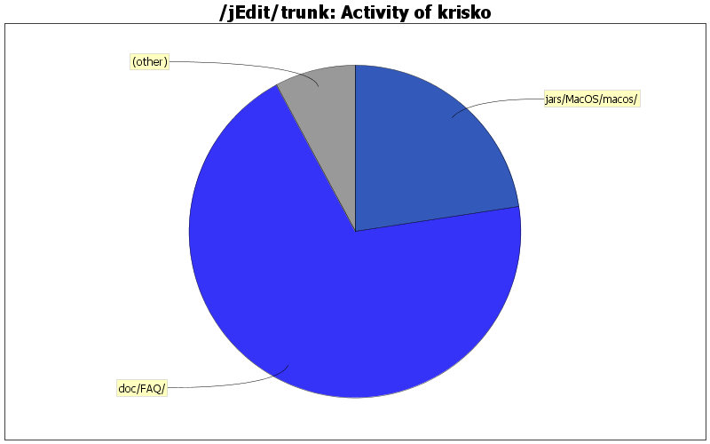

| Directory | Changes | Lines of Code | Lines per Change |
|---|---|---|---|
| Totals | 93 (100.0%) | 3785 (100.0%) | 40.6 |
| doc/FAQ/ | 30 (32.3%) | 2632 (69.5%) | 87.7 |
| jars/MacOS/macos/ | 28 (30.1%) | 855 (22.6%) | 30.5 |
| jars/MacOS/macos/script/ | 3 (3.2%) | 143 (3.8%) | 47.6 |
| jars/MacOS/ | 28 (30.1%) | 108 (2.9%) | 3.8 |
| jars/MacOS/macos/menu/ | 4 (4.3%) | 47 (1.2%) | 11.7 |

Fixed broken Applescript support
22 lines of code changed in 2 files:
Fixed minor compile error
1 lines of code changed in 1 file:
Minor fixes
12 lines of code changed in 3 files:
Bug fixes; Services implemented
137 lines of code changed in 9 files:
Opening a directory will display it
12 lines of code changed in 3 files:
Fixes missing options
3 lines of code changed in 2 files:
Updated for dynamic menu api
45 lines of code changed in 2 files:
Bug fixes, changed to new plugin api
7 lines of code changed in 3 files:
minor changes
64 lines of code changed in 4 files:
more additions to dock menu
137 lines of code changed in 2 files:
More fixes and features
62 lines of code changed in 2 files:
A few bug fixes
359 lines of code changed in 4 files:
Updated changes
2 lines of code changed in 1 file:
Import of Mac OS Plugin 3.0
44 lines of code changed in 6 files:
Final FAQ update for 4.1
25 lines of code changed in 2 files:
Mac OS 2.0.4; Fixed NPE and restore
26 lines of code changed in 5 files:
Mac OS Plugin 2.0.3; Fixed issues with background mode
18 lines of code changed in 4 files:
Almost done now I promise
16 lines of code changed in 2 files:
Yet more FAQ changes
8 lines of code changed in 4 files:
Minor FAQ corrections
15 lines of code changed in 4 files:
(6 more)